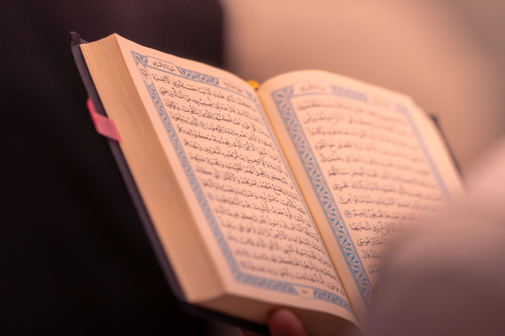
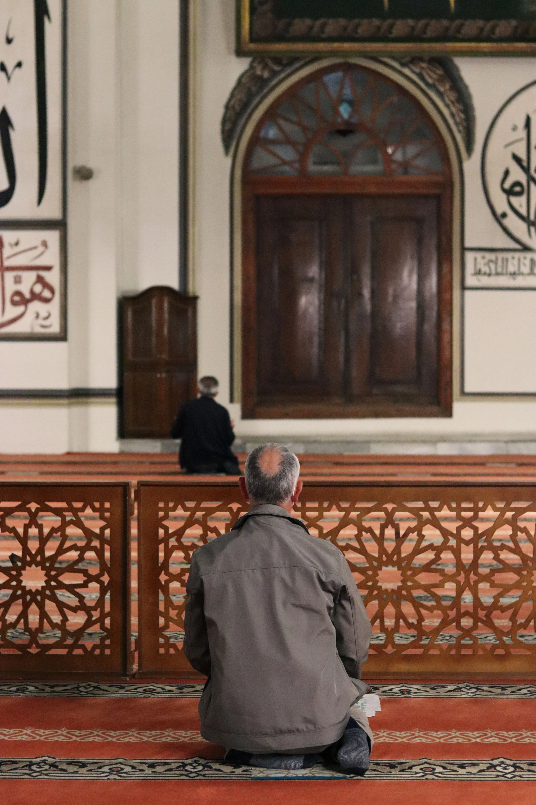

Fitrah Manusia & Kebutuhan islam
Fitrah berasal dari fathara yang berarti menciptakan atau kejadian asal/bawaan. Secara istilah, fitrah adalah potensi dasar yang diberikan Allah sejak manusia diciptakan, terutama kecenderungan mengenal Tuhan dan mencintai kebaikan.
- Fitrah Iman: naluri untuk meyakini adanya Tuhan atau Kekuatan Yang Maha Tinggi.
- Fitrah Akhlak: kecenderungan mencintai kejujuran, kebaikan, dan keadilan serta membenci keburukan.
- Fitrah Jasmani: kecenderungan menjaga kebersihan, kesucian, dan kelestarian hidup melalui konsep Thaharah.
وَاِذْ اَخَذَ رَبُّكَ مِنْۢ بَنِيْٓ اٰدَمَ مِنْ ظُهُوْرِهِمْ ذُرِّيَّتَهُمْ وَاَشْهَدَهُمْ عَلٰٓى اَنْفُسِهِمْ ۚ اَلَسْتُ بِرَبِّكُمْ ۗ قَالُوْا بَلٰى ۛ شَهِدْنَا ۛ اَنْ تَقُوْلُوْا يَوْمَ الْقِيٰمَةِ اِنَّا كُنَّا عَنْ هٰذَا غٰفِلِيْنَ ۙ
QS. Al-A'raf: 172 — Menunjukkan perjanjian primordial manusia dengan Allah.


Mengapa Akal Saja Tidak Cukup?
2.1 Alasan Manusia Membutuhkan Agama
- Keterbatasan akal: Akal kuat dalam memahami hal empiris, tetapi tidak mampu menjangkau perkara ghaib secara mandiri; wahyu melengkapinya.
- Kebutuhan makna hidup: Sains menjelaskan bagaimana sesuatu terjadi, sedangkan agama menjawab tujuan dan makna kehidupan.
- Kebutuhan standar moral: Wahyu memberikan pedoman moral yang stabil dan mengikat, tidak semata-mata bergantung pada kepentingan manusia.
2.2 Peran Agama bagi Kebutuhan Holistik
- Jasmani: Mengatur kesehatan, keamanan, makanan halal, dan keluarga melalui prinsip Hifz an-Nafs dan Hifz an-Nasl.
- Rohani: Memberi ketenangan, harapan, dan kedekatan kepada Allah melalui shalat, dzikir, dan orientasi akhirat.
- Sosial: Membangun keadilan dan keteraturan melalui muamalah, zakat, serta larangan riba.